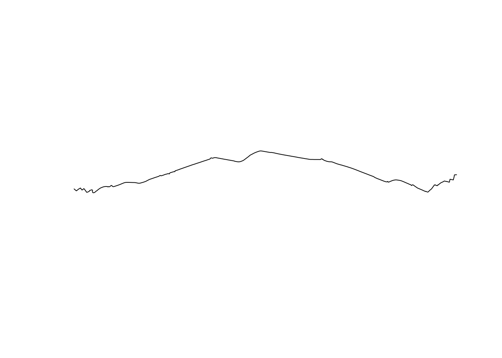
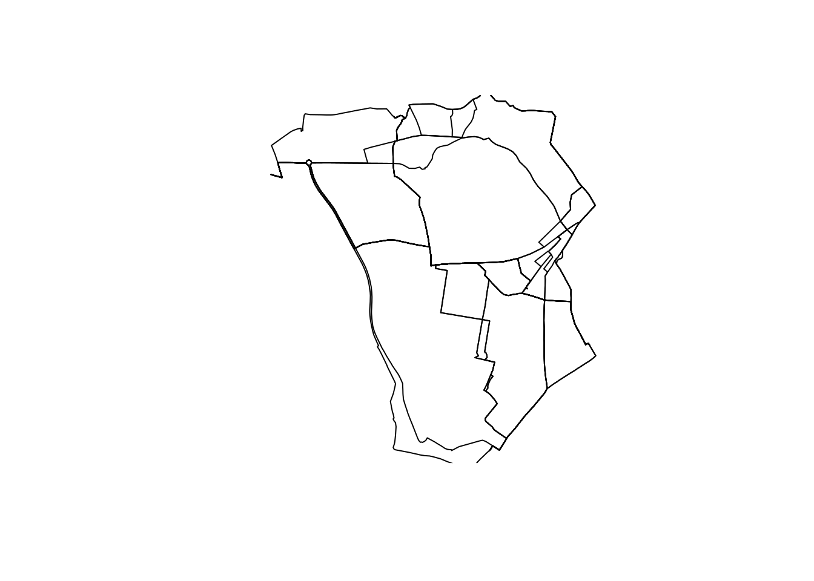
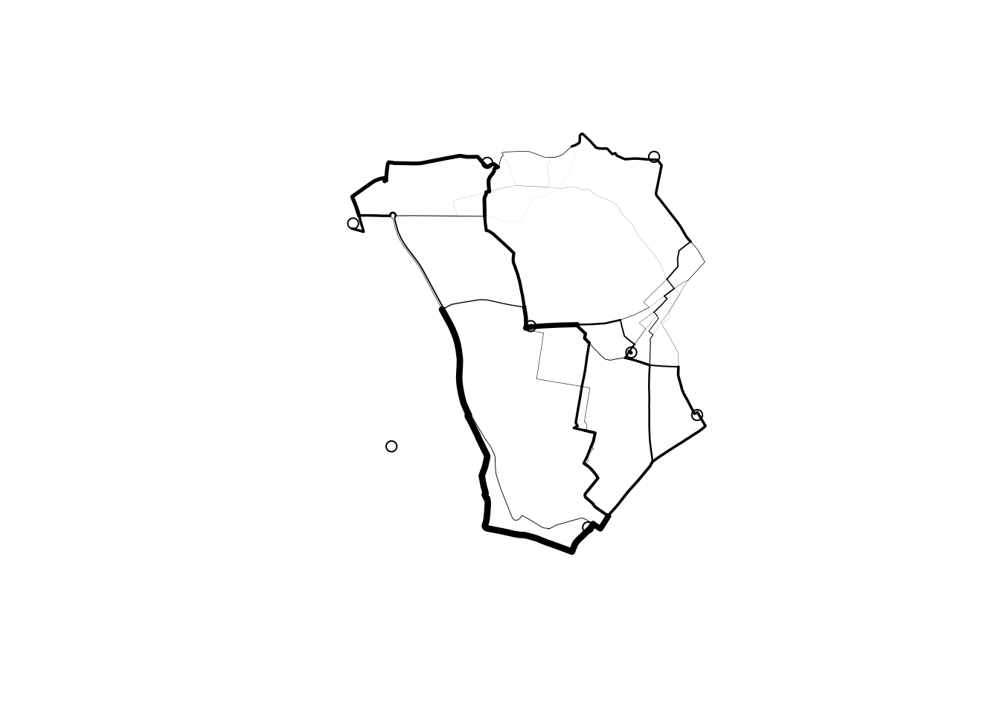
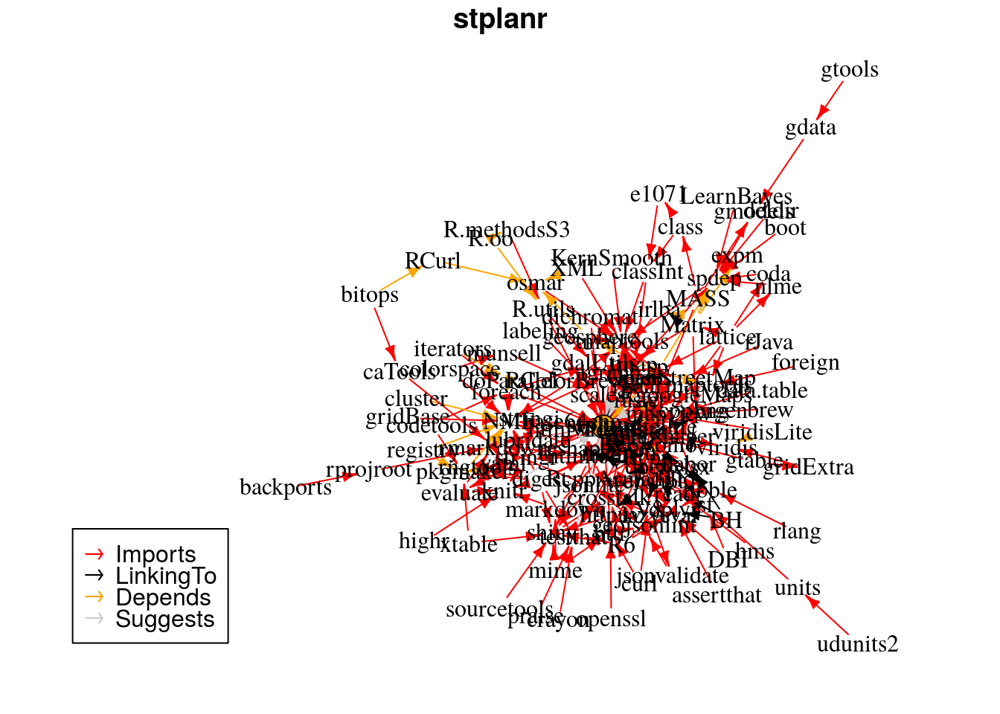

stplanr is a package for sustainable transport planning with R.
It provides functions for solving common problems in transport planning and modelling, such as how to best get from point A to point B. The overall aim is to provide a reproducible, transparent and accessible toolkit to help people better understand transport systems and inform policy.
The initial work on the project was funded by the Department of Transport (DfT) as part of the development of the Propensity to Cycle Tool (PCT). The PCT uses origin-destination data as the basis of spatial analysis and modelling work to identify where bicycle paths are most needed. See the package vignette (e.g. via vignette("introducing-stplanr")) or an academic paper on the Propensity to Cycle Tool (PCT) for more information on how it can be used. This README gives some basics.
stplanr should be useful to researchers everywhere. The function route_graphhopper(), for example, works anywhere in the world using the graphhopper routing API and read_table_builder() reads-in Australian data. We welcome contributions that make transport research easier worldwide.
Key functions
Data frames representing flows between origins and destinations must be combined with geo-referenced zones or points to generate meaningful analyses and visualisations of ‘flows’ or origin-destination (OD) data. stplanr facilitates this with od2line(), which takes flow and geographical data as inputs and outputs a SpatialLinesDataFrame. Some example data is provided in the package:
library(stplanr)
data(cents, flow)Let’s take a look at this data:
flow[1:3, 1:3] # typical form of flow data
#> Area.of.residence Area.of.workplace All
#> 920573 E02002361 E02002361 109
#> 920575 E02002361 E02002363 38
#> 920578 E02002361 E02002367 10
cents[1:3,] # points representing origins and destinations
#> class : SpatialPointsDataFrame
#> features : 3
#> extent : -1.546463, -1.511861, 53.8041, 53.81161 (xmin, xmax, ymin, ymax)
#> coord. ref. : +init=epsg:4326 +proj=longlat +datum=WGS84 +no_defs +ellps=WGS84 +towgs84=0,0,0
#> variables : 4
#> names : geo_code, MSOA11NM, percent_fem, avslope
#> min values : E02002382, Leeds 053, 0.408759, 2.284782
#> max values : E02002393, Leeds 064, 0.458721, 2.856563These datasets can be combined as follows:
travel_network <- od2line(flow = flow, zones = cents)
w <- flow$All / max(flow$All) *10
plot(travel_network, lwd = w)
The package can also allocate flows to the road network, for example through a link to the CycleStreets.net API.
Route functions take lat/lon inputs:
trip <-
route_cyclestreet(from = c(-1, 53), to = c(-1.1, 53), plan = "balanced")and place names, found using the Google Map API:
if(!Sys.getenv("CYCLESTREET") == ""){
trip <- route_cyclestreet("Bradford, UK", "Leeds, UK", plan = "balanced")
plot(trip)
}
We can replicate this call to CycleStreets.net multiple times using line2route.
intrazone <- travel_network$Area.of.residence == travel_network$Area.of.workplace
travel_network <- travel_network[!intrazone,]
if(Sys.getenv("CYCLESTREET") == ""){
t_routes = routes_fast
} else {
t_routes <- line2route(travel_network)
}
plot(t_routes)
Another way to visualise this is with the leaflet package:
library(leaflet)
leaflet() %>% addTiles() %>% addPolylines(data = t_routes)For more examples, example("line2route").
overline is a function which takes a series of route-allocated lines, splits them into unique segments and aggregates the values of overlapping lines. This can represent where there will be most traffic on the transport system, as illustrated below.
t_routes$All <- travel_network$All
rnet <- overline(sldf = t_routes, attrib = "All", fun = sum)
lwd <- rnet$All / mean(rnet$All)
plot(rnet, lwd = lwd)
points(cents)
Installation
To install the stable version, use:
install.packages("stplanr")The development version can be installed using devtools:
# install.packages("devtools") # if not already installed
devtools::install_github("ropensci/stplanr")
library(stplanr)stplanr depends on rgdal, which can be tricky to install.
Funtions, help and contributing
The current list of available functions can be seen with:
lsf.str("package:stplanr", all = TRUE)To get internal help on a specific function, use the standard way.
Dependencies
stplanr has many dependencies. These are designed to help make it fast, but may make it slow to install for the first time.
Its dependencies are plotted below using the minCRAN package:
dg <- miniCRAN::makeDepGraph("stplanr")
plot(dg)
Meta
- Please report issues, feature requests and questions to the github issue tracker
- License: MIT
- Get citation information for
stplanrin R doingcitation(package = 'stplanr') - This project is released with a Contributor Code of Conduct. By participating in this project you agree to abide by its terms.